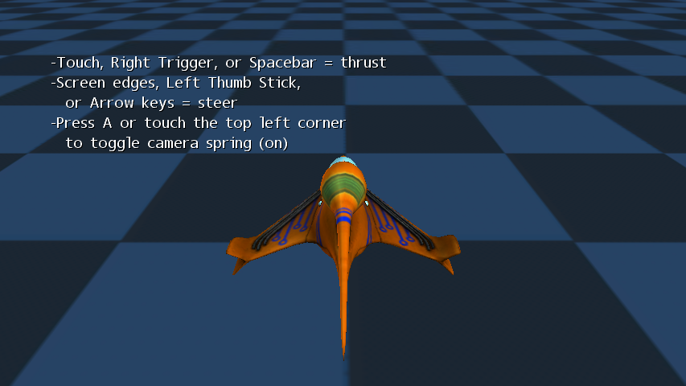

Chase Camera
Ported from Microsoft's XNA 4.0 Chase Camera sample.
Source for this sample on GitHub ↗

Play ▸Opens in a new tab.
About this sample
Fly a Spacewar ship above a checkerboard plane. A spring and damper let the chase camera lag behind movement and settle back into place. Toggle the spring to compare it with a rigid camera at a fixed offset from the ship.
Controls
| Action | Control |
|---|---|
| Thrust | Space, right gamepad trigger or left mouse button |
| Steer | Arrow keys, left gamepad stick or press a screen edge |
| Toggle camera spring | A, gamepad A or click the top-left corner |
| Reset the ship | R or right gamepad stick click |
| Exit | Escape or gamepad Back |